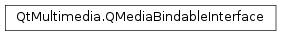

QMediaBindableInterface¶
Inherited by: QRadioData, QMediaPlaylist, QMediaRecorder, QAudioRecorder, QCameraImageCapture, QGraphicsVideoItem, QVideoWidget, QCameraViewfinder
Detailed Description¶
ThePySide2.QtMultimedia.QMediaBindableInterfaceclass is the base class for objects extending media objects functionality.
-
class
PySide2.QtMultimedia.QMediaBindableInterface¶
-
PySide2.QtMultimedia.QMediaBindableInterface.mediaObject()¶ Return type: PySide2.QtMultimedia.QMediaObjectReturn the currently attached media object.
-
PySide2.QtMultimedia.QMediaBindableInterface.setMediaObject(object)¶ Parameters: object – PySide2.QtMultimedia.QMediaObjectReturn type: PySide2.QtCore.boolAttaches to the media
object. Returns true if attached successfully, otherwise returns false.
© 2018 The Qt Company Ltd. Documentation contributions included herein are the copyrights of their respective owners. The documentation provided herein is licensed under the terms of the GNU Free Documentation License version 1.3 as published by the Free Software Foundation. Qt and respective logos are trademarks of The Qt Company Ltd. in Finland and/or other countries worldwide. All other trademarks are property of their respective owners.